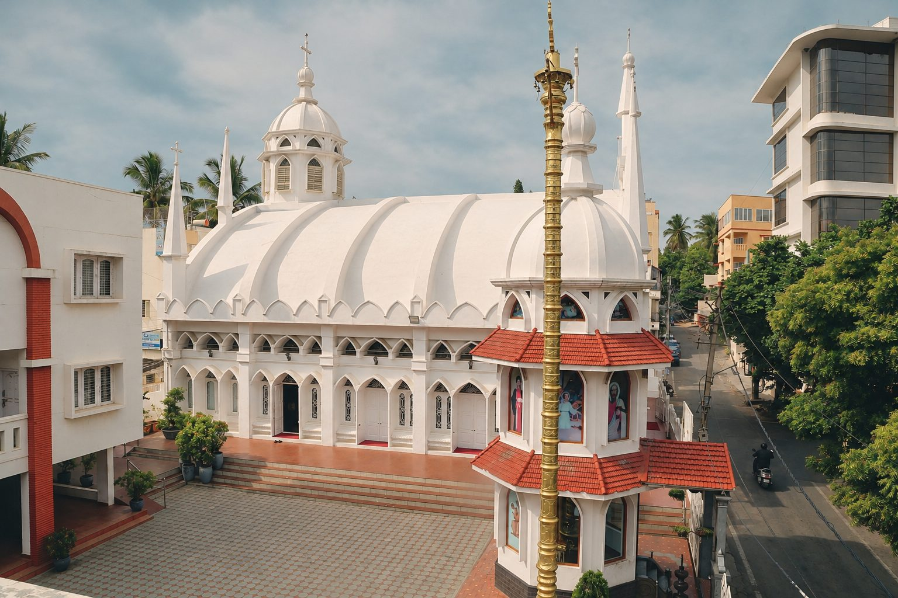
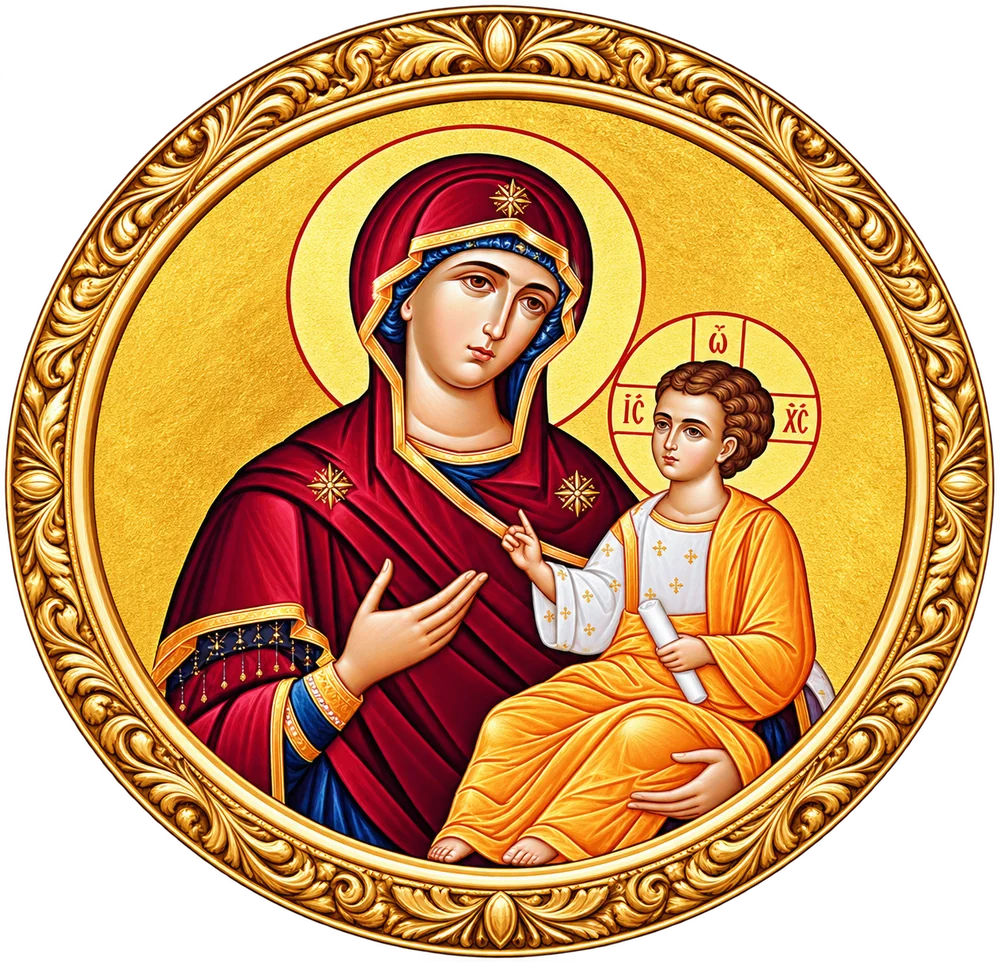
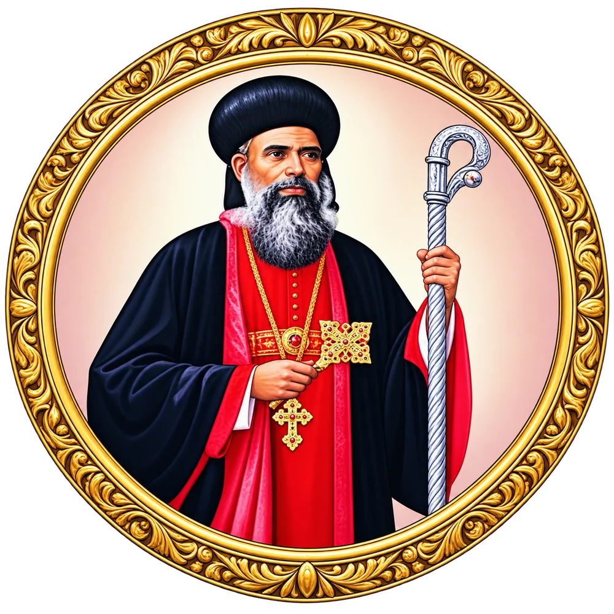
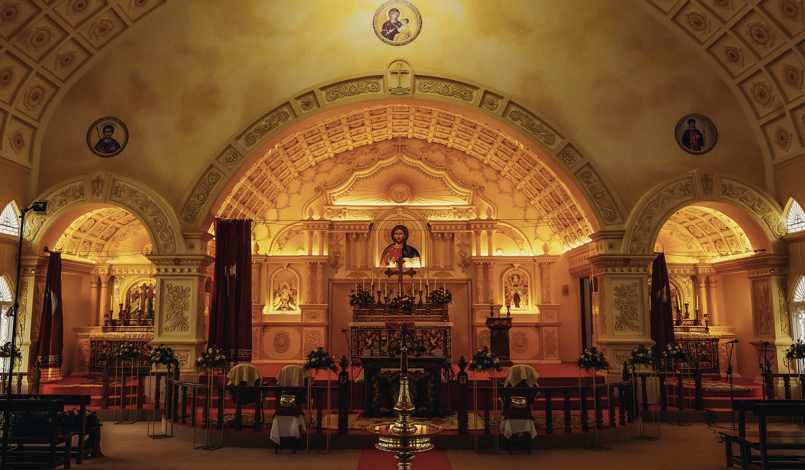
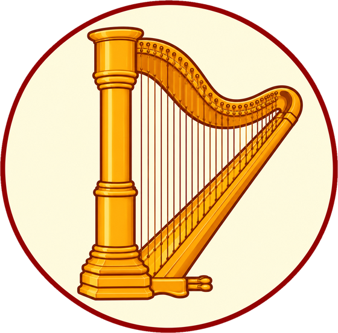

He Himself is before all things,and in Him all things hold together.
He is the head of the body,the church.
Colossians 1:17–18
Growing in faith, living in grace.
“Enter his gates with thanksgiving
Psalm 100:4
and his courts with praise.
Give thanks to him; bless his name.”
For generations, St. Mary's Orthodox Valiyapally has been a home of prayer, faith, and fellowship in Jalahalli. Since 1966, we have walked together in the light of Christ, preserving the sacred traditions and apostolic faith entrusted to us through St. Thomas the Apostle.

Our patron saints

St. Thomas
Apostle of India

St. Mary
Mother of God

St. Gregorios
Parumala Thirumeni

Mary’s Song of Praise
My soul magnifies the Lord, and my spirit rejoices in God my Savior, for he has looked with favor on the lowly state of his servant. Surely from now on all generations will call me blessed, for the Mighty One has done great things for me, and holy is his name.Luke 1:46–49
SpiritualOrganizations
- Sunday School

SMOVP Choir- MGOCSM & OCYM
- Martha Mariam Vanitha Samajam
- St. Dionysius Orthodox Fellowship(SDOF)
- St. Joseph Orthodox Fellowship(SJOF)
Gallery
Swipe to explore · tap a photo to view
Visit
St. Mary's Orthodox ValiyapallyJalahalli, Bengaluru
Address
Gangamma Circle, Church Road, Ramachandrapura, Jalahalli East, Bengaluru – 560013, Karnataka
Parish office
Tuesday – Sunday10:00 AM – 5:00 PM
Closed on Mondays
Service times
Holy Qurbana
Sunday8:00 AM
Saturday6:45 AM
Daily Prayer
Morning5:30 AM
Evening6:30 PM